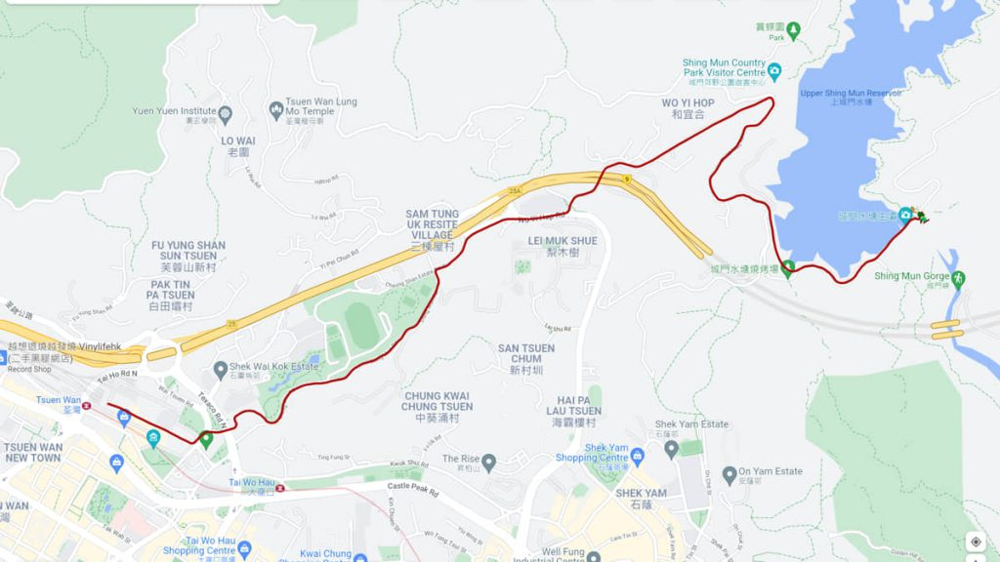
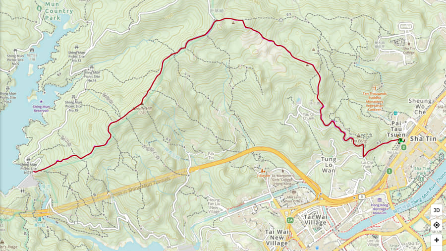
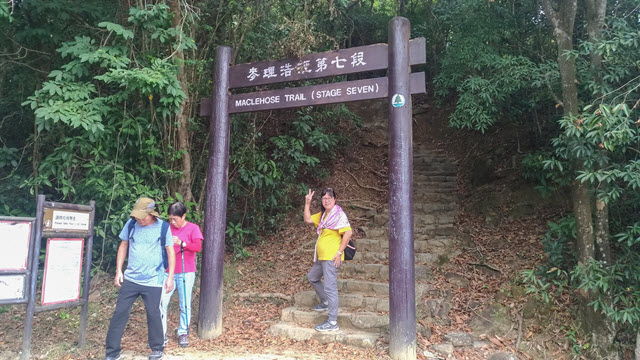
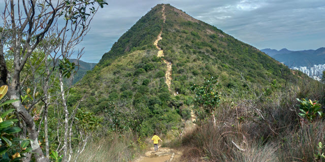
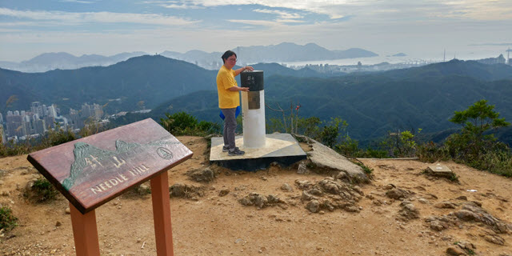
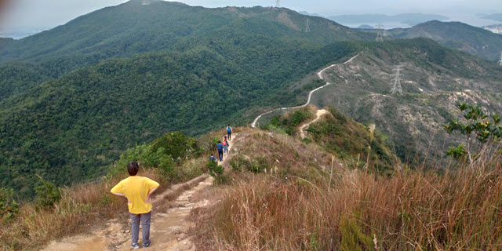
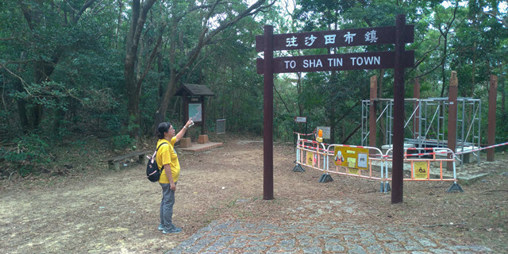
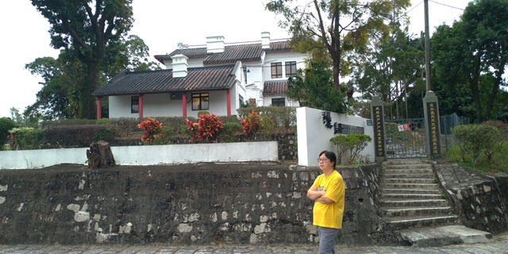
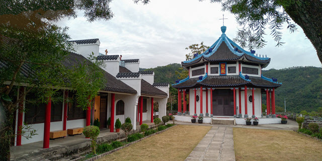

在2021年12月23日, 我和 Kathy 進行了一次登山遠足, 路線是從荃灣市區步行到城門水塘, 跟著攀越海拔 532米高的針山頂峰, 然後到沙田大圍道風山, 最後抵達沙田市鎮。
城門水塘 – 沙田道風山、 沙田站 KML 檔案下載鏈結:
download/shing-mun-reservoir-needle-hill-sha-tin.kml
我在荃灣老圍村長大, 到了18歲那年才離開, 當年居住的地方離城門水塘不太遠, 所以經常步行到那裡行山、釣魚、採摘洋莓和捉豹虎。城門水塘的紅孩兒豹虎是最勇猛的, 真是打遍天下無對手! 不過, 紅孩兒居住在長滿又尖又長的利剌植物中, 捕捉它們的代價可高呢!
城門水塘的行山活動, 繞塘一周是指定動作, 也會間中爬上針山, 好像有用不完的氣力。在讀中學及大學時, 也曾經帶同學去爬過針山幾次。最難忘一次是在中學時期, 和幾位小學同學一起從荃灣出發, 沿途一邊踢毽，一邊穿越針山到沙田, 然後探望及幫襯當時在酒樓工作的一位小學同學, 當時的快樂情境, 至今竟然仍然那麼深刻。
沒有爬針山很多年了, 突然間想探望這位老朋友, 便安排了今天和 Kathy 一起前往。
出發前曾考慮過, Kathy 可否應付這登山行程? 對我來說, 爬上針山沒有什麼難度, 但對 Kathy 來說, 肯定一點也不容易。但想到, 很多郊野公園的步道在近十多年都鋪設得很好, 說不定針山也一樣呢, 就決定和 Kathy 一起前往。
如果從荃灣出發, 針山登山口在城門水塘主壩附近, 所以我們要先往城門水塘。其實城門水塘離荃灣市區不遠, 所以我永遠都是選擇步行前往。
我們在早上11:00從港鐵荃灣站的綠楊新邨出口出發, 穿過商場, 來到綠楊新邨平台花園, 我小時候就讀的德聲小學就在這裡。
穿過綠楊新邨平台花園, 走過馬路, 轉左循城門谷的標示一直走。穿過一條行人隧道, 走過城門谷游泳池, 便來到城門道的入口。
接著沿微微向上傾斜的城門道走。在我小時候, 只要沿城門道一直走便可到達城門水塘, 路程不遠, 路線很簡單。不過, 當發展了象山邨、上葵涌村等等的地方後, 城門道被斬斷、繞道和拉長, 現在走起來就比較迂迴和遠了很多。
很快就來到第一段城門道的盡頭。城門道就在這裡被斬斷。
在這裡轉左沿象山東路走，再轉右沿象山邨西路往上走。
走完象山邨西路後，緊接是和宜合道。
沿和宜合道走了一會, 已經看到馬路對面往「城門水塘」的路標。
在可風中學前的斑馬線走到馬路對面。
在前面的路口轉左, 這裡是第二段城門道的入口。不過，起初一段並不是原本的城門道，只是發展市鎮後被繞道到來這裡。
我們沿城門道一直向前走。拐個彎後, 迎面的一段才是原本的城門道。這一段稍為保留了一些我小時候的城門道風貌。
再往前走, 約早上 11:45便來到城門水塘的入口。
以往樸素的樓梯, 現在變得花哩花碌, 和四周自然環境顯得格格不入，不知道是誰的傑作。
因整條針山登山路線沿途都沒有補充站，所以我們在城門水塘入口旁的小食亭吃了一個粉腸套餐, 雖然份量很小，但總算吃了午餐。
在城門水塘入口打個卡, 便進入城門水塘。往城門水塘主壩這步道多了一個名稱 — 城門畔塘徑。我以往通山走的山路, 現在大部份都有了名稱。
從小至今, 來了城門水塘過百次, 但留下的照片卻廖廖可數, 而且都是近幾年拍的, 都是歸功於智能手機的普及。
走一會便來到城門燒烤場, 這裡亦是 麥理浩徑7段 的起點, 已經可以看到水塘的漂亮景色。
暫時離開麥理浩徑, 改為沿水塘邊的小徑走。說到這小徑, 我可能也有一些功勞。很久以前, 來城門水塘釣魚及遊玩的人, 為了不想兜路, 便走出這條小徑, 起初非常狹窄和危險, 要握住山邊的石頭和樹枝走過。當走的人多了, 小徑越來越寬闊, 到了現在，更成為正常步道, 並加上欄杆。
穿過小徑, 又返回麥理浩徑7段。從這裡開始, 我們會沿麥理浩徑一直走, 攀越海拔 532米高的針山最高峰, 然後循沙田郊野徑下山到沙田道風山及沙田市中心。
向前走一會，來到城門水塘主壩, 很多遊客對那圓形的排洪漏斗突感興趣, 尤其是遇上排洪時, 相信更多旅客湧來。不過, 可能自小已經見慣, 覺得沒有什麼特別。
主壩這裡除了可以欣賞水塘優美景色, 更可以眺望通往下城門水塘的城門峽 (或稱雙城峽), 遠至獅子山的雄偉景色也可見到。
走過城門水塘主壩, 拐左向上走一會, 迎面是麥理浩徑7段的牌坊。這裡便是位於海拔 200米高的針山的登山口。
從荃灣市區起步, 其實道路都一直緩緩向上, 就在不知不覺間已經來到這裡海拔 200米高的地方。
穿過牌坊後，我手機的相機又突然間壞了, 唯有借用 Kathy 的手機。我手機的相機在最近一年常常無故的壞, 奇怪的是, 過幾天又好像回復正常, 但維持不久。如果要繼續拍攝旅行遊記, 真的要考慮更換手機。
從針山登山口開始, 迎面是一條直奔天上, 好像永遠走不完的長長天梯。
向上走了十多分鐘, 回頭一望, 城門水塘及荃灣市區景色盡入眼簾，景色優美。
沿階梯繼續往上走。以往爛泥山路，現在鋪上階梯，行山人士可以續級登上。
越往上走, 視野越廣闊, 景色越優美。
繼續往上走, 好像永無止境的階梯, 一直蜿蜒上山。
從登山口計, 向上步行了約30分鐘, 來到一個山脊上, 這裡是海拔 342米高的肥仔脊。
接著是一段向下的階梯, 稍微下降到海拔 327米高的一個山坳。
迎面又是彎彎曲曲、向上的長長天梯。
我們越走越高, 荃灣至獅子山下的沙田市鎮的壯麗景色, 盡現眼前, 景色真是很美。
繼續往上走, 步道開始沒有那麼完整, 變得崎嶇, 越來越難走了。
又向上走了一會, 沙田市鎮就在腳下, 景色太美, 不禁常常駐足欣賞。
突然間! 尖尖的針山就在右邊前面閃出! 心裡感到萬分興奮, 感覺有如和幾十年分開的老朋友見面一樣!
非常吃力的繼續往上走, 感覺步道越來越陡斜。
從登山口計, 向上步行了剛好一小時, 又來到另一個山脊上, 這裡是海拔 443高的肥佬脊。肥佬脊是一個頗寬闊的山脊, 穿過高高的叢林後, 眼前一亮。
多數熟悉的山峰呀! 我從來沒有把你忘記!
每次來到這裡, 總有一股衝動, 想一口氣爬到針山頂峰, 然後豪情地振臂高呼, 迴盪整個山谷。
接著走下山脊, 來到另一個山坳上。
迎面是登上針山頂峰最後的一段山路, 是整條登山路線最崎嶇、最陡斜、最艱辛的一段。
開始攻頂啦!
這段山路也斷斷續續的鋪了一些階級, 已經好走很多了, 適合大部分人士行走。
部份山路都頗為崎嶇, 走起來不可大意。
回頭望望, 已經走到很高了!
繼續往上走, 道路越來越陡斜, 十分難走。但也不忘停下來欣賞山下壯麗景色。
攻頂前的一段路非常陡斜, 崎嶇不平, 沙石鬆散, 小心翼翼的走。
從登山口計, 經過1小時30分的努力, 不斷向上爬, 終於登上海拔532米高的針山山頂!
不同以往, 現在山頂上多了一些遊人, 再不可以豪情地振臂高呼了!
四周遠望, 群山環繞, 腳下城市彷如積木, 道路有如彎彎曲曲的絲帶, 水塘有如一面鏡子, 風景美不勝收。
在針山頂峰欣賞完風景, 休息了一會, 繼續行程。
接著從另一邊的步道下山。都是斷斷續續的泥路和階級, 陡斜程度和上山那段都差不多。
Kathy 很怕下山, 驚到幾乎哭了出來, 沿途很多地方都要拖著她走, 所以拍照不多。
我們用了半小時, 從海拔532米高的針山頂峰急降了176米, 來到海拔356米高的地方。
前面一段的麥理浩徑7段是很好走的石屎路, 已經走完今天遠足行程最辛苦的一段路線了!
從這裡到沙田市鎮, 再沒有崎嶇山路。當 Kathy 知道後, 心情立即回復開朗。
沿麥理浩徑繼續向前走。迎面是一條彎彎曲曲、首先向下, 然後一直向上延伸到山谷另一邊的山峰上的波浪形道路。
我們一直向前走, 沿途都不時回望從針山頂峰走到來這裡那一段彎彎曲曲、高低起伏的山路, 不知不覺間已經走了很多路了。
約下午 3:30, 來到海拔317米高的一個分叉路口。
如果繼續向前走, 約一小時便可到達麥理浩徑7段的終點站— 鉛礦坳。而右邊樹林中的小徑是沙田郊野徑, 是往山下的沙田鎮。
我們今天的目的並不是走畢整段麥理浩徑7段, 所以在這裡轉右沿沙田郊野徑走。
從這裡開始, 我們會一直往下走到沙田大圍道風山, 最後抵達沙田市鎮。
Okay! 開始下山啦!
沿沙田郊野徑入口往下走, 道路並不崎嶇, 很好走。
來到一個分叉路。向前走可以到達沙田火炭。
我們是往港鐵沙田站, 循右邊的路繼續向下走。
這一段是鋪設得很好的階級, 非常好走。
穿過密密麻麻的樹林後, 沙田市鎮就在前面遠處的山下閃出, 景色怡人。
沙田郊野徑規劃很好, 中途設有椅子, 供遊人休息。
我們繼續往下走。
中間有一小段依崖而建的山路, 然後又是鋪設得很好的階級。
又是一段山路。
接著又是鋪設得很好的階級。這一段沒有分叉路口, 可以放心的一直往下走。
從沙田郊野徑入口開始, 一直往下走了一小時, 終於第一次看到「道風山」的路標, 看來離目的地不遠了!
一直往下走。
又有往「道風山」的路標。
當穿過樹林後, 來到一條馬路, 迎面是一排漂亮的白色房子, 終於來到「道風山」了。
接著沿道風山路往下走, 來到白色房子的大門口, 這裡是「信義宗神學院」, 不過, 不開放給遊人參觀的, 在外面看看算了。
沿道風山路繼續往下走。
走過信義宗神學院, 便來到道風山基督教叢林。
道風山基督教叢林是由西方傳教士艾白德牧師所興建的一個基督教建築群，設計揉合了中西文化, 建築富中國園林特色, 尤其是類似佛教寶塔建築設計的聖殿為最具特色。因名字有「道」這一個字, 令人聯想起中國的道教，因此常常被人誤會為一座中式廟宇群。
我和 Kathy 拍拖時來過道風山基督教叢林遊覽, 屈指一算, 已經差不多40年了, 當時醉翁之意不在酒, 所以對這裡的印象不深。
進入道風山基督教叢林, 首先看到的是漢語基督教文化研究所, 是為了推動基督教中國化而設的學術研究機構。
經過靈修部, 再往前走便來到道風山入口。
道風山入口是一道石拱門，上面刻有「道風境界」的四個大字，另一邊則刻上「道風大千」。
再往前走就來到聖殿。聖殿建於1934年, 原名「景尊寶殿」, 但因為這名稱過於「專業」, 所以後來改名為聖殿。
在道風山基督教叢林四處參觀了一會, 已經是下午 5:00。這時, 天色漸漸昏暗, 這裡離港鐵沙田站還有一段頗長路程, 是時候離開啦!
離開道風山基督教叢林, 繼續沿道風山路一直往下走。
不久, 街燈開始亮起了, 要加快腳步了!
一直往下走, 來丁一個交通迴旋處。看看路旁豎立的路標, 右邊的小徑是往沙田站, 估計是一條捷徑, 便離開道風山路，改為循小徑那方向走去。
循小徑一直往下走, 經過幾個分叉路口, 不過, 沒有標示往什麼地方, 唯有心疑疑的繼續向前走。
當看到熟悉的「新城市廣場」紅磚大樓時, 知道走對了方向!
當走下一條石級, 便來到港鐵沙田站前的街道。
我們從荃灣出發, 經過6小時的徒步旅途, 終於抵達沙田終點站啦!
接著我們往沙田好運中心的一間餐廳吃晚飯, 然後從沙田站乘港鐵離開, 就這樣結束了今天的攀越針山行程啦!